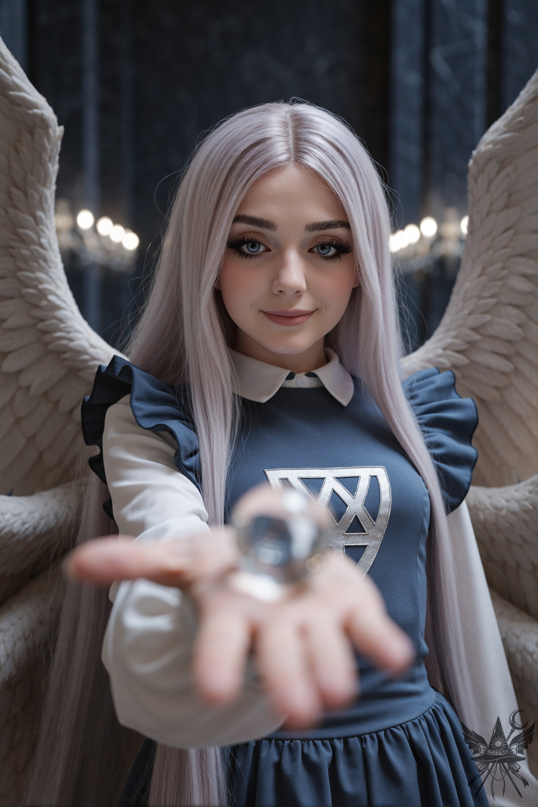
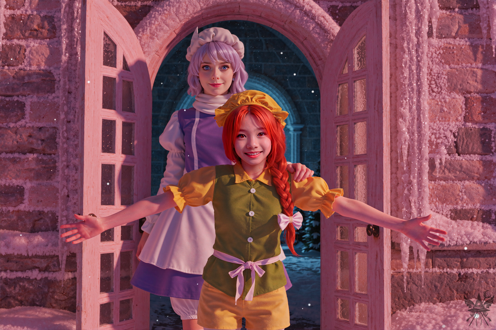
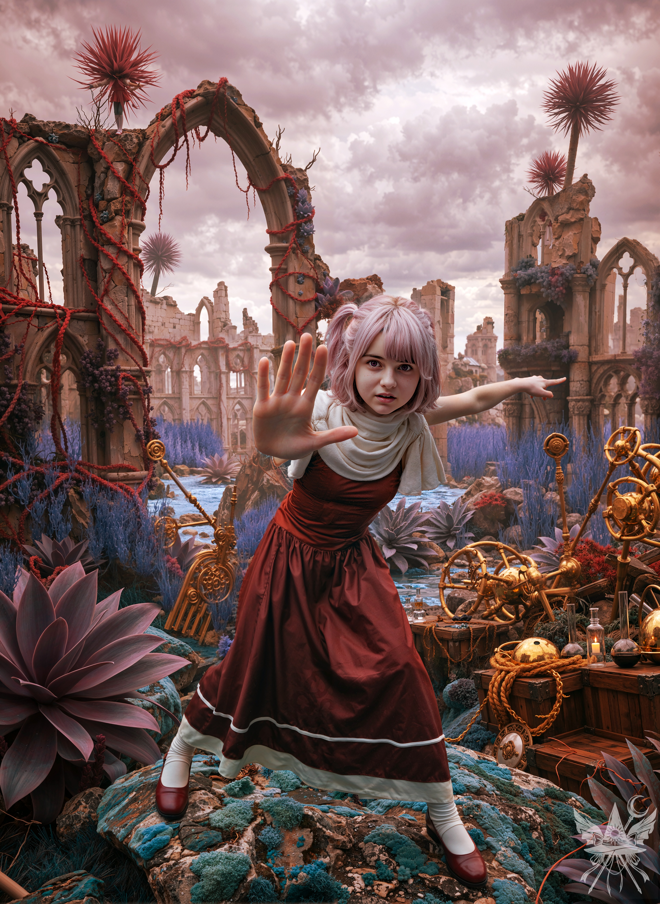

いくつもの謎が解き明かされ、盤面には新たな光が差し込んでいた。キクリの王冠を飾っていたアメジストは、五つ目の怪物ユウゲン・マガンに囚われている。そして、この世界の支配者たる神綺は敵に回るどころか、共闘の確約すら与えてくれた。欺瞞に満ちた泥濘のような日々は、ようやく終わりを告げようとしている。
エリスは「苦労して」稼いだと言い張る金で購ったメイド服を、大事そうにバッグへ押し込んでいた。ちゆりも手際よく荷物をまとめる。その背中には夢子から支給された盾が背負われていた。金属フレームに覆われた代物で、柄の横にあるリングを回せば、設定した色の魔法バリアを展開できるという。手元にあるメデアの杖も、似たような構造だった。
出立の準備を整えていると、背後から静かな気配が近づいてきた。振り返ると、そこには大天使サリエルが立っていた。神綺の部屋を辞した彼女は、階段を下りてくると、メデアへ向かって穏やかな視線を向けた。

冷たく澄んだパンデモニウムの静寂の中、圧倒的な神聖さが場を支配する。差し出された球体の重みと、そこに込められた微かな温もりが、冷徹なこの空間においてひどく異質に感じられた。それは、超越者からの慈悲とでも呼ぶべき、静かで確かな別れの余韻だった。
「メデアよ。汝の旅は、危険な道のりとなるでしょう。そこで、わたくしからささやかな贈り物を授けましょう」
メデアは深く頭を下げる。
「ありがとうございます、サリエル様。どのような贈り物でも、光栄に存じます」
サリエルの掌の上で、小さな球体が眩い光を放ち始めた。
「これは過去と未来、両方を見通せる球体です。隠された真実を知りたい時、あるいは最も可能性の高い未来を見たい時に、これをお使いなさい」
「いつもお気遣いいただき、感謝いたします。これで……過ぎ去ったことや、これから何が起こるのかが分かるのですね」
「左様でございます。ただし、この球体は一度しか作動いたしません。その後は砕け散ってしまいますゆえ、十分にご注意なさい」
（サリエル……最後に粋な真似をしてくれる）
大天使に別れを告げ、メデアは夢子と共に宮殿を後にした。ジェット箒の後部へちゆりを乗せ、空高く舞い上がる。操縦には随分と慣れてきたが、今日のように風が強く霧雨の降る日は厄介だ。ちゆりは普段、手動ミサイルに乗って移動しているらしい。理香子の「ミミちゃん」に跨った時の記憶が脳裏をよぎる。あの日から数日しか経っていないというのに、ひどく遠い昔のように感じられた。
街の上空を抜け、一行は「人間の味わい」の前に降り立った。居酒屋の喧騒を背に、メデアとちゆりはエリスの部屋へと通される。夢子は「私は外でお待ちいたします」とだけ言い残し、店の前に立ち尽くした。
エリスの部屋は一応の掃除はされていたものの、家具も壁も傷だらけで、お世辞にも清潔とは呼べない代物だった。散らかったベッドの横のクローゼットから、エリスがメデアのローブを引っ張り出す。いつもの服に着替える間、彼女は妖精の干物を注文し、メデアたちに一尾ずつ押し付けてきた。
その時、エリスの視線がメデアの鞄から覗く微かな光に釘付けになった。
「ねぇ、メデっち。それ……サリエルが持ってた玉じゃない？ 過去も見えるってやつでしょ？」
エリスは目を輝かせ、ずいっと身を乗り出してくる。
「ええ、そうよ。一度しか使えないらしいけれど」
「アタシ、ユーマちゃんを倒すの、手伝ってあげるって言ったわよね？ だからさ……その玉、アタシにちょうだいよ！ 妹が連れ去られた時のこと……それがあれば分かるかもしれないじゃない！ 危険な戦いに行くんだから、それくらいの前払い、当然でしょ？」
（図々しい悪魔だ。だが、彼女の弾幕は貴重な戦力になる……ここで恩を売っておくのも悪くない）
「……わかったわ。約束通り、最後までしっかり働いてちょうだいね」
メデアが球体を差し出すと、エリスはひったくるように受け取り、大事そうに胸に抱いた。
「やった！ もちろんよ、メデっち！ アタシにどーんと任せなさい！」
軽く腹ごしらえを済ませ、三人は再び空へ上がる。
飛行中、弾幕の訓練を行うことにした。夢子は言われるまでもなく、白い防御フィールドを展開している。メデアは杖のリングを「白」に合わせ、初めて頭頂のチャクラ――サハスラーラへ意識を集中させた。
空戦を想定した訓練だ。飛行中に思考を分割するのは至難の業だが、実戦がより過酷になることは火を見るより明らかだった。今ここで感覚を掴む価値は十分にある。
サハスラーラが開くまでには、途方もない時間を要した。下層からすべてのチャクラを貫いてエネルギーを引き上げ、頭上に力を蓄積していく。やがてチャクラが回転し始め、ようやく撃鉄が上がった。
杖の先端に集束した白い光は、可動式の先端を回転させることで弾幕として射出される。夢子へ向けてエネルギーを解放すると、眩い光の奔流が一直線に飛んだ。悪くない威力だ。だが、弾幕は夢子のフィールドに触れた途端、あっさりと弾かれ四方八方へ散華してしまった。
今度はリングを「ヴィシュッダ」に合わせ、使い慣れた水色の弾幕を放つ。先ほどよりも光は強く、夢子のフィールドにわずかに吸収されるものもあった。
最後に、ちゆりに杖を預け、手持ちのクリソプレーズを通してエネルギーを流し込む。放たれた弾幕は杖の1.5倍ほどの輝きを放ち、今度はすべて魔法のフィールドに呑み込まれた。
（やはり、杖よりもクリソプレーズの方が強力だ。それに、この石は魔力の流れを安定させてくれる……。だが、水色以外の弾幕を撃つには杖に頼るしかない。両方を使い分けるか）
眼下の郊外に、見慣れた円盤のシルエットが浮かび上がった。宇宙船へ入ると、夢美が余裕の笑みで出迎えてくれた。悪魔であるエリスと夢子を一瞥すると、早速あの光るスキャナーで二人を舐めるように計測し始める。メデアとちゆりが事の顛末を報告すると、彼女は満足げに頷いた。
「私もただ手をこまねいていたわけじゃないわ。あんな魅力的な街が近くにあるのに、調べないなんてもったいないでしょう？ 図書館のデータをこっそりスキャンさせてもらったのよ」
夢美が宙を指弾すると、ホログラフィックスクリーンが展開し、電子書籍のリストが羅列された。
* 『一般的悪魔学』
* 『実践的悪魔学』
* 『幻想の技術』
* 『七つのチャクラの覚醒』
最後の項目に目を留め、メデアは夢美に声をかけた。
「夢美さん、『七つのチャクラの覚醒』を開いてもらえますか」
夢美は指先を滑らせ、序文を飛ばして本文を空中に投影した。
---
「七つのチャクラの覚醒.hvf ― ホロビューア」
天地を繋ぐ架け橋となる、人体の内に秘められたエネルギー。それは神々の創造と破壊の力にも匹敵する、計り知れない力です。その力が最も顕著に現れるのが、チャクラの覚醒によって開花する「神聖な能力」でしょう。
* 1. ムーラダーラ
* 神聖な能力：「大地の守護」
* 大地の力が驚異的な耐久力を授け、飢餓、渇き、疲労、痛みといったあらゆる苦痛に耐えうるようになります。チャネルを開放すれば、強固な魔法のバリアを纏うことができます。
* 2. スヴァディシュターナ
* 神聖な能力：「クンダリーニの蛇」
* 五感が研ぎ澄まされ、鋭敏な感覚を得ます。チャネルを開放すれば、思考はさらに明晰になり、スピードと俊敏性が飛躍的に向上します。
* 3. マニプーラ
* 神聖な能力：「太陽の炎」
* 太陽の炎を操る力を手に入れ、あらゆる攻撃力が倍増します。敵を焼き尽くすほどの灼熱の炎を操ることができます。チャネルを開放すれば、将軍のカリスマ性が備わり、大軍を率いて戦うことさえ可能です。
* 4. アナーハタ
* 神聖な能力：「共感」
* あらゆる感情を読み取る力が開花し、周囲の人々が抱く感情や、真意を遠く離れていても感じ取ることができるようになります。チャネルを開放すれば、他者の感情を操ることも可能です。
* 5. ヴィシュッダ
* 神聖な能力：「カメレオン」
* 真実と嘘を見抜く力が備わり、巧みな話術で相手を魅了できるようになります。チャネルを開放すれば、他者の姿に変身することも可能です。
* 6. アージュニャー
* 神聖な能力：「千里眼」
* 通常では見えないものが見えるようになります。チャネルを開放すれば、過去や未来の特定の瞬間を垣間見ることができます。
* 7. サハスラーラ
* 神聖な能力：「宇宙の摂理」
* 運命の糸と宇宙の摂理を理解し、物理・魔法を問わずあらゆる法則を解き明かせるようになります。チャネルを開放すれば、運命を変えることすら可能です。
※チャクラを覚醒させるには、それを100%開発し、対応する強力なエネルギーを解放する必要があります。チャネルを開放できるのは覚醒者のみで、1日に1回しか使用できません。
---
テキストを目で追っている横で、ちゆりが一握りの錠剤を水で一気に喉へ流し込んだ。棚には薬品瓶や箱が雑然と並んでおり、
「メピラミン」
「アミトリプチリン」
「アミナジン」
など、見覚えのある文字列が散見される。夢美はメデアの視線に気づくと、わざとらしく話題を切り替えた。
「メデアとちゆりは、チャクラの訓練に励んでいるみたいね。私は今、短波センサーを魔界の周波数に合わせて調整中なのだけれど、試してみる？」
夢美は小型スキャナーを手に取ると、全員を頭の先から爪先まで一瞥した。即座に画面へ数値が弾き出される。
| 色 | メデア | ちゆり | 夢美 | エリス | 夢子 |
| --- | --- | --- | --- | --- | --- |
| 赤 (ムーラダーラ) | 0% | 0% | 0% | 20% | 50% |
| オレンジ (スヴァディシュターナ) | 10% | 0% | 0% | 70% | 40% |
| 黄色 (マニプーラ) | 0% | 0% | 0% | 70% | 70% |
| 緑 (アナーハタ) | 0% | 0% | 0% | 20% | 70% |
| 水色 (ヴィシュッダ) | 70% | 0% | 0% | 25% | 50% |
| 藍色 (アージュニャー) | 20% | 20% | 0% | 20% | 70% |
| 白 (サハスラーラ) | 10% | 0% | 0% | 10% | 100% |
「私の数値は全部ゼロね……。ありえないわ」
夢美は露骨に落胆し、窓の外に広がる魔都市のスカイラインを睨みつけた。
「私も全然ダメだったよ」
ちゆりが苦笑いを浮かべる。
操縦席に腰を下ろしたエリスが、クスクスと喉を鳴らした。
「夢子ったら、すごいじゃない！」
夢子は表情一つ変えない。
「当然です。神綺様をお守りするのが私の役目ですから。ですが、退屈な存在だなんて思わないでくださいね」
「誰もそんなこと言ってないわよー。……ああ、コーヒー飲みたいわね」
エリスが優雅に翼を広げながら伸びをすると、緑髪のロボット少女る～ことが静かに一礼し、キッチンへ向かった。
「あら、気が利く子ね。いくらで売ってくれるの？ 夢美ちゃん」
「私たちの星に帰るまでは、る～ことは手放せないわ。魔界では一体も作れないもの」
「夢美ちゃんたちの……星！？ つまり、別の惑星ってこと？ すごい技術があるんじゃない！ アタシも連れてってよ！」
夢美とちゆりが、意味深長な視線を交わす。
「いいわよ。でも、その翼、隠さないと実験台にされちゃうわよ」
る～ことが運んできた、エスプレッソの芳醇な香りが漂う。温かいカップを傾けながら、ちゆりが小さな籐の袋を夢美へ放った。
「これ、『四次元ストーン』だってさ。使い方はだいたいわかったから、燃料はこれで大丈夫だ」
「よくやったわ、ちゆり。あとは『奇跡』を拝めればいいのだけれど……。メデア、『奇跡』の準備はどうなっているの？」
「ほぼ整いました。ただ、オレンジを魔界に置き去りにしたくありません。戦う前に、もう一度探しておきたい」
（あの子の直情的な弾幕は、手駒として悪くない。ただ、少々……）
「ちょっと変わっているわね」
メデアの内心を読んだように、夢美が苦笑した。
「でも、この船ならあの娘にも何かいい薬が見つかるかもしれないわ」
夢美が流し目でちゆりを見ると、ちゆりはわずかに目を伏せた。
「オレンジはレティと共に姿を消しました。まずはレティの館へ向かいましょう」
「いいわよ。宇宙船なら数分で着くわ」
轟音と共に機体が揺れる。ジグザグの軌道を描きながら、宇宙船は魔界の空を裂き、氷雪世界へと降り立った。朝日を反射して白銀に煌めく氷の宮殿。ひどく寒がる夢美の護衛に夢子を残し、エリスも「雪女を怒らせるのはごめんだわ」と早々に同行を拒否したため、メデアとちゆりの二人で宮殿の門を叩くことになった。
迷わず扉をノックすると、奥からドタバタとした足音が響き、乱暴に扉が開かれた。そこには、ルイズへの擬態を解き、本来の姿に戻ったオレンジが立っていた。メデアと目が合った瞬間、彼女の顔に満面の笑みが弾ける。玄関の段差に立っていたメデアは、突進してきた彼女の勢いを受け止めきれず、雪の上へ無様に倒れ込んだ。

猛烈な冷気と、それをかき消すほどの強烈な熱量の衝突。凍てつく空気が静止したかのような錯覚の中、無邪気で暴力的なまでの歓喜がメデアへ向かって押し寄せてきた。だが、その背後の暗がりには、静かに獲物を品定めするような、底知れぬ冷笑が潜んでいた。
「メデたん！ どこ行ってたの！？ ずっと探してたのに！」
「あら、来てたのね。……珍しいこと」
レティが悠然と姿を現し、足元に倒れ込むメデアたちを見下ろす。
メデアは雪を払いながら立ち上がった。
「オレンジを探していて。……決闘はどうなりました？」
「もちろん、オレンジの勝ち！」
「ええ、私の勝ちよ」
二人の声が、不気味なほど綺麗に重なった。
「オレンジちゃんって、なかなか面白い子なのよ。……少し、騒がしいけれどね。フフ……」
レティがオレンジの頭を撫でる。
「レティが白い粉くれたの！ 甘くておいしいやつ！ そんでね、オレンジはね、お仕事してたの！ 街中に粉を配達するお仕事！ めっちゃ楽しかった！ ねえレティ、もっとちょうだい！」
「ええ、皆さんにも分けてあげましょう」
レティは一度奥へ消えると、白い粉末が詰まった小袋を三つ手にして戻ってきた。まずちゆりへ差し出し、甘ったるい声を鼓膜へ流し込む。
「科学者さんでしたわよね？ ぜひ、試してみてちょうだい。すぐに頭がスッキリするわよ。フフ……」
「遠慮しとく」
ちゆりは即座に突き返し、メデアへ顔を寄せて囁いた。
「メデア、これって……アレ、だよね。私には自分の薬があるからさ。飲むと頭が痛くなっちまうし」
オレンジが残りの小袋へ手を伸ばそうとしたため、メデアはその腕を優しく、しかし確かな力で押さえた。
「ごめんね、オレンジ。でも、白い粉はもう十分だと思うわ」
オレンジは世界の終わりのように唇を尖らせたが、それ以上の反発は見せなかった。
レティはルビーの件には一切触れず、メデアにはもう用がないとばかりに微笑を浮かべている。早々に別れを告げ、メデアたちは宇宙船へと急いだ。空は鉛色の雲に覆われ、風のうねりが暴力的になっている。神綺を案じる夢子の急かす声に押され、一行はついに五つ目の怪物、ユウゲン・マガン討伐へと乗り出した。
夢美はレーザー銃や見慣れぬ装置で完全武装し、ジェットパックまで背負っている。ちゆりはミサイルに跨り、左手に盾、右手にブラスターを構えていたが、いつもの快活さは影を潜め、顔色には明確な緊張が走っていた。安全第一のエリスも腹を括ったようだが、生意気な笑みはない。ただ一人、オレンジだけが遠足の子供のように落ち着きなく戦意を昂ぶらせている。
エリスのナビゲートに従い、宇宙船は横風に煽られながらも10分ほどで
「ウィナの廃墟」――魔界の中央ゴミ捨て場へ到着した。レーダーには何の反応もない。ハッチを開け、武装した五人が地表へ降り立つ。
エリスが柄にもなく、しんみりとした声を出した。
「ユーマちゃんを倒したら、アタシ、誰をからかえばいいのよ。かわいそうに……」
「でもエリス、一緒に帰るって約束したわよね？」
夢美が冷たく釘を刺すと、エリスはパッと表情を切り替え、いつもの軽薄さを取り戻した。
崩れかけた石畳を踏みしめた瞬間、ちゆりがブラスターの画面を凝視して声を上げた。
「いた！ ユーマちゃんだ！」
全員の視線が小さな画面へ集まる。赤、オレンジ、黄色、緑、水色の五つの光点が、約500メートル先の地点で等間隔に明滅していた。
「さあ、戦略家さん」
夢美がメデアを見据え、挑発するように口角を上げる。
「魔法と色に詳しいのでしょう？ 私はミサイルとレーザーしか使えないから、戦術を考えてちょうだい」
メデアはレーダーの配置と、先ほど頭に叩き込んだチャクラの対応表を照らし合わせた。誰を、どの目玉へぶつけるか。論理的な最適解を導き出そうとした思考は、背後からの甲高い叫び声によって唐突に切断された。
「夢子さん！ 夢子さん！」

むせ返るような異界の湿度と、軋む機械音が支配する廃墟。停滞した重苦しい空気を切り裂くように、切羽詰まったパニックの波動が一行の足を引き止めた。
「これ以上進むな」
という強烈な拒絶のベクトルが、理屈よりも先に肌を刺す。岩の上に立ち塞がった少女が、夢子へ向かってすがりつくように叫んでいた。
「どうしたのです、サラ。落ち着きなさい」
夢子が静かな威圧感を含んだ声でたしなめる。
「夢子さん！ 軍隊は幻想郷に侵攻するんですよね！？ どうして…夢子さんも参加しないんですか！？」
「侵攻？ どういうことです。幻想郷侵攻は中止になったはずですよ。あのアリスと名乗る者は偽物でした」
「え…？ アリス様が偽物…？」
サラは完全に虚を突かれたように目を丸くした。
「でも…たった今、アリス様にお会いしたんです！ 軍隊を率いるって…仰ってました！」
「アリスに…会った？ どこでですか」
夢子の声から温度が消え、静かな怒りが滲み出る。
「町外れです！ そこで…神綺様から直接、軍の指揮を任されたって…。今、部隊がこっちに向かってるみたいで…。重そうな鎧を着てたから、そんなに速くは飛べないはずですけど…それでも、あと30分くらいでここに着いちゃいますよぉ…！」
どんよりと垂れ込めた赤紫の空を、夢子が見上げる。
「……神綺様が、そのような命令を出すはずがありません。天候は朝から変わっていないのですから」
「あの詐欺師、アメジストを狙ってるに決まってるわ。ここに隠れて、あいつらが怪物を倒すのを待ってから不意を突けばいいじゃない」
エリスがちゃっかりとした提案を挟み込む。
「ちょっと待ってください！ まさか…ユウゲン・マガンを退治するつもりじゃないですよね！？」
サラが顔面を蒼白にさせ、首を激しく横に振る。
「私は…絶対に、絶ーっ対に参加しませんからね！ ……あ、それと！ あの軍隊と一緒に、見慣れない人がいたんです…。天使の翼を持ってたのに…雰囲気は悪魔みたいで…。ピンクのドレスに、頭には赤いリボンをつけてて…」
（……幻月だ）
バラバラだったピースが、最悪の形で組み上がっていく。
「すぐに神綺様のもとへ向かい、ありのままを報告しなさい。急ぐのです」
夢子の絶対的な命令を受け、サラは弾かれたように空へ飛び立ち、あっという間に雲間へと消えていった。
[SYSTEM ALERT: 音響兵器デプロイ完了]
▼ 本章の絶望を1000%味わうための専用聴覚データ ▼
■ YouTube：『Gatekeeper's Bouncy Shift (ゲートキーパーズ・バウンシー・シフト)』